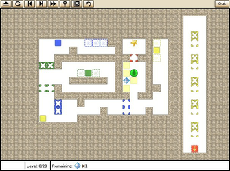
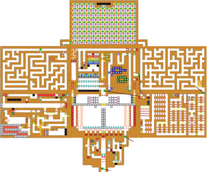
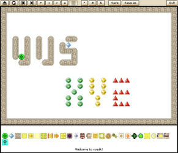

Xye
Dieser Artikel wurde für die folgenden Ubuntu-Versionen getestet:
Ubuntu 16.04 Xenial Xerus
Zum Verständnis dieses Artikels sind folgende Seiten hilfreich:
 Xye
Xye  ist ein Puzzlespiel, das auf Kye von Colin Garbutt basiert. In jedem Level müssen alle Edelsteine eingesammelt werden. Blöcke müssen so bewegt werden, dass ein Level erfolgreich gelöst werden kann. Manche Blöcke haben jedoch einen vordefinierten Schiebeweg. Darüber hinaus können Magnete eingesetzt werden und manchmal führt eine Tür zum Erfolg. Doch vor den Monstern sollte man sich in acht nehmen...
ist ein Puzzlespiel, das auf Kye von Colin Garbutt basiert. In jedem Level müssen alle Edelsteine eingesammelt werden. Blöcke müssen so bewegt werden, dass ein Level erfolgreich gelöst werden kann. Manche Blöcke haben jedoch einen vordefinierten Schiebeweg. Darüber hinaus können Magnete eingesetzt werden und manchmal führt eine Tür zum Erfolg. Doch vor den Monstern sollte man sich in acht nehmen...
|  |
| Xye |
Installation¶
Das Spiel kann über das folgende Paket installiert [1] werden:
xye (universe)
 mit apturl
mit apturl
Paketliste zum Kopieren:
sudo apt-get install xye
sudo aptitude install xye
Aus dem Quellcode¶
Um das Spiel zu kompilieren, sind die folgenden Pakete notwendig:
checkinstall (universe)
libsdl-image1.2-dev (universe)
libsdl-ttf2.0-dev (universe)
mit apturl
Paketliste zum Kopieren:
sudo apt-get install checkinstall libsdl-image1.2-dev libsdl-ttf2.0-dev
sudo aptitude install checkinstall libsdl-image1.2-dev libsdl-ttf2.0-dev
Von der Projektseite  den aktuellen Quellcode herunterladen und entpacken [2]. Den Kompiliervorgang [3] [4] einleiten und mittels
den aktuellen Quellcode herunterladen und entpacken [2]. Den Kompiliervorgang [3] [4] einleiten und mittels checkinstall abschließen.
Bedienung¶
Das Spiel ist im Menü unter Spiele zu finden oder kann über xye aufgerufen [5] werden.
|  |
| Puzzle of Pyramid |
Zusatzlevel¶
Für das Spiel steht eine Reihe von zusätzlichen Level zur Verfügung. Diese liegen im .xye-Format vor und werden im Homeverzeichnis unter ~/.local/share/xye/levels abgelegt. Beim nächsten Spielstart stehen diese zur Verfügung. Zusätzlich können Level für die Spiele Sobokan (.xsb) und Kye (.kye) verwendet werden.
Level, welche teilweise zuerst entpackt [2] werden müssen, können unter anderem von den folgenden Seiten bezogen werden:

Hinweis:
Auf Groß-/Kleinschreibung muss nicht geachtet werden.
|  |
| Leveleditor |
Editor¶
Der im Spiel integrierte Leveleditor kann über F1 aufgerufen werden. Die am unteren Bildschirmrand zu ersehenden Objekte werden im Level verteilt. Über ⏎ kann der aktuelle Entwurf getestet werden. In jedem Level sollte darauf geachtet werden, dass Kye und mindestens ein Edelstein vorkommen. Über "[a]" werden Informationen (Autor, Beschreibung...) zum aktuellen Level angegeben. Nachdem das Level über "SAVE AS" gespeichert wurde, ist es unter dem gewünschten Namen im Ordner mit den Zusatzlevel zu finden.
Die Fähigkeiten des Editors sind derzeit noch begrenzt. Derzeit kann die Objektfarbe noch nicht geändert werden. Ebenso ist es nicht möglich, zwei Objekte auf einer Stelle zu positionieren. Fertige Level können an den Entwickler gesendet werden.
Probleme und Lösungen¶
Auflösung¶
Passt die Auflösung nicht zum Bildschirm, kann man die Datei xyeconf.xml aus dem Ordner ~/.config/ zu löschen.
Tastenkürzel¶
| Tastenkürzel | |
| Taste(n) | Funktion |
 / /  | Steuerung |
| ⏎ | Auswahl / Neustart / Testen |
| ⌫ | Zurück |
| Entf | Letzte Aktion rückgägig machen |
| H | Hinweis anzeigen |
| P / N | Vorheriges / Nächstes Level |
| S | Lösung anzeigen |
| 0 - 1 / A - Z | Springt in der Levelauswahl zum gewählten Buchstaben / der gewählten Zahl (sofern vorhanden) |
| F1 | Editor |
| F2 | Level bearbeiten |
| F3 | Theme ändern |
| Esc | Verlassen |

- Erstellt mit Inyoka
-
 2004 – 2017 ubuntuusers.de • Einige Rechte vorbehalten
2004 – 2017 ubuntuusers.de • Einige Rechte vorbehalten
Lizenz • Kontakt • Datenschutz • Impressum • Serverstatus -
Serverhousing gespendet von